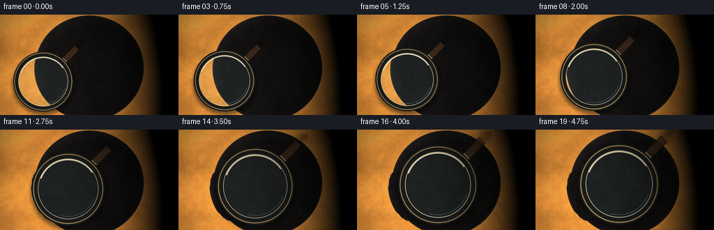
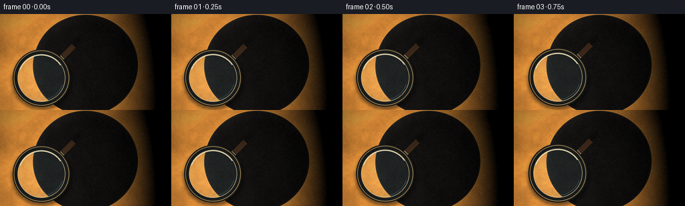
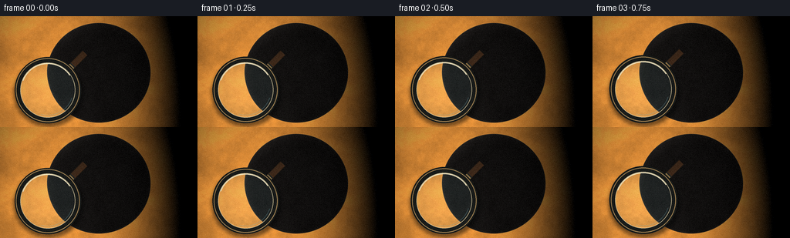
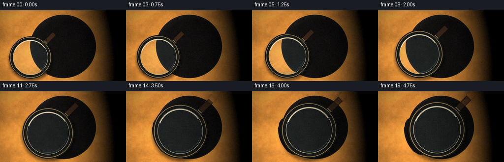
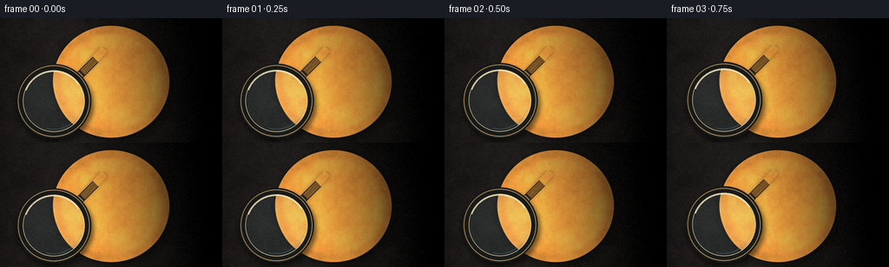
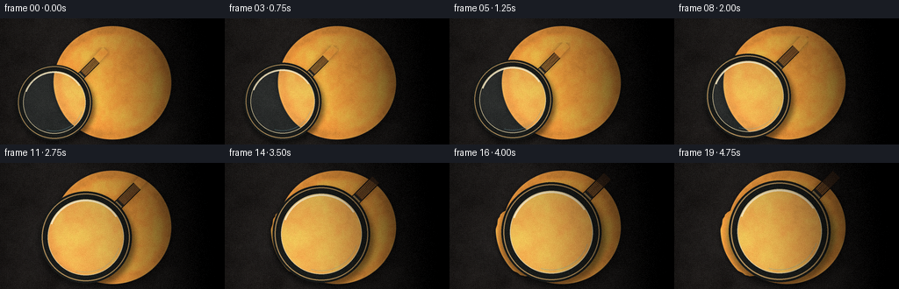

CODING AGENTS AS PIXEL WORLD MODELS
traex/DeepSeek-V4.1-Flash · phygen_069
点击播放 · 原生 RGB 像素
此结果可播放，但该运行尚未通过最终提交审核。页面展示不代表评测通过。
逐轮保存的候选
回放视频、检查图与代码变化。
每份候选均可单独播放。实际图片检查记录在下方工具轨迹中。
候选 01播放与检查图
点击播放 · 原生 RGB 像素


展开代码变化
--- 上一保存版本
+++ 本次保存版本
@@ -0,0 +1,470 @@
+"""Procedurally render a magnifying glass approaching an embossed coin."""
+
+from pathlib import Path
+
+import numpy as np
+from PIL import Image, ImageDraw, ImageFilter, ImageFont
+
+import artifact_io
+
+
+W, H = 256, 144
+N = 20
+SS = 4
+SW, SH = W * SS, H * SS
+CASE = Path(__file__).resolve().parent
+
+
+def smoothstep(x):
+ x = np.clip(x, 0.0, 1.0)
+ return x * x * (3.0 - 2.0 * x)
+
+
+def mix(a, b, t):
+ return a + (b - a) * t
+
+
+def grid(width, height):
+ yy, xx = np.mgrid[:height, :width].astype(np.float32)
+ return xx, yy
+
+
+def hash_noise(xx, yy, seed=0):
+ """Smooth, tile-independent value noise."""
+ result = np.zeros_like(xx, dtype=np.float32)
+ total = 0.0
+ for octave, (scale, weight) in enumerate(
+ ((0.006, 0.42), (0.018, 0.27), (0.055, 0.17), (0.16, 0.09), (0.43, 0.05))
+ ):
+ x = xx * scale + seed * 11.71 + octave * 2.31
+ y = yy * scale + seed * 7.37 - octave * 1.77
+ xi = np.floor(x).astype(np.int32)
+ yi = np.floor(y).astype(np.int32)
+ u = smoothstep(x - xi)
+ v = smoothstep(y - yi)
+
+ def rand(ix, iy):
+ n = ix.astype(np.uint32) * np.uint32(374761393)
+ n ^= iy.astype(np.uint32) * np.uint32(668265263)
+ n ^= np.uint32(seed * 69069 + octave * 362437)
+ n = (n ^ (n >> 13)) * np.uint32(1274126177)
+ n ^= n >> 16
+ return (n & 0xFFFF).astype(np.float32) / 65535.0
+
+ a = rand(xi, yi)
+ b = rand(xi + 1, yi)
+ c = rand(xi, yi + 1)
+ d = rand(xi + 1, yi + 1)
+ value = mix(mix(a, b, u), mix(c, d, u), v)
+ result += (value - 0.5) * weight
+ total += weight
+ return result / total
+
+
+def sd_round_rect(x, y, half_w, half_h, radius):
+ qx = np.abs(x) - half_w + radius
+ qy = np.abs(y) - half_h + radius
+ outside = np.sqrt(np.maximum(qx, 0.0) ** 2 + np.maximum(qy, 0.0) ** 2)
+ return outside + np.minimum(np.maximum(qx, qy), 0.0) - radius
+
+
+def alpha_mask(distance, softness=1.0):
+ return smoothstep((-distance + softness) / (2.0 * softness))
+
+
+def normal_from_height(height, strength):
+ gy, gx = np.gradient(height)
+ nx = -gx * strength
+ ny = -gy * strength
+ nz = np.ones_like(height)
+ inv = 1.0 / np.sqrt(nx * nx + ny * ny + nz * nz)
+ return nx * inv, ny * inv, nz * inv
+
+
+def shade(nx, ny, nz, base, roughness=0.5, metallic=0.0):
+ """Three soft studio lights plus an environment reflection."""
+ lights = (
+ (-0.48, -0.78, 0.62, 1.00, np.array([1.00, 0.83, 0.62], np.float32)),
+ (0.68, -0.38, 0.58, 0.64, np.array([0.62, 0.79, 1.00], np.float32)),
+ (-0.16, 0.52, 0.82, 0.42, np.array([1.00, 0.96, 0.88], np.float32)),
+ )
+ diffuse = np.zeros((*nx.shape, 3), np.float32)
+ specular = np.zeros_like(diffuse)
+ for lx, ly, lz, power, color in lights:
+ dot = np.clip(nx * lx + ny * ly + nz * lz, 0.0, 1.0)
+ diffuse += dot[..., None] * color * power
+ half_z = lz + 1.0
+ hx, hy, hz = lx, ly, half_z
+ hlen = np.sqrt(hx * hx + hy * hy + hz * hz)
+ nh = np.clip((nx * hx + ny * hy + nz * hz) / hlen, 0.0, 1.0)
+ exponent = 18.0 + (1.0 - roughness) * 100.0
+ specular += (nh**exponent)[..., None] * color * (0.22 + metallic * 0.62)
+ reflected = np.clip(
+ 0.22
+ + 0.30 * smoothstep((ny + 0.45) / 0.8)
+ + 0.24 * smoothstep((nx + 0.70) / 0.9),
+ 0.0,
+ 1.0,
+ )
+ metal = base * (0.30 + 0.82 * diffuse)
+ metal += specular * (0.38 + 0.62 * base)
+ metal += reflected[..., None] * base * metallic * 0.30
+ return metal
+
+
+def make_coin_maps():
+ xx, yy = grid(SW, SH)
+ cx, cy = SW * 0.50, SH * 0.53
+ rx, ry = SW * 0.305, SW * 0.305 * 0.965
+ dx = (xx - cx) / rx
+ dy = (yy - cy) / ry
+ radius = np.sqrt(dx * dx + dy * dy)
+
+ # Cast shadow, with the coin slightly raised above the cloth.
+ sh_dx = dx - 0.035
+ sh_dy = dy - 0.080
+ sh_r = np.sqrt(sh_dx * sh_dx + sh_dy * sh_dy)
+ shadow = (1.0 - smoothstep((sh_r - 0.84) / 0.34)) * 0.52
+
+ # A warm, dark tabletop under cool studio light.
+ cloth = np.zeros((SH, SW, 3), np.float32)
+ cloth[:] = (0.105, 0.095, 0.092)
+ weave_x = 0.5 + 0.5 * np.cos(xx * 0.73 + np.sin(yy * 0.041) * 1.5)
+ weave_y = 0.5 + 0.5 * np.cos(yy * 0.79 + np.sin(xx * 0.037) * 1.2)
+ weave = (weave_x * weave_y - 0.25) * 0.018
+ grain = hash_noise(xx, yy, 2) * 0.095
+ pool = np.exp(-(((xx - cx) / (SW * 0.60)) ** 2 + ((yy - cy) / (SH * 0.70)) ** 2))
+ cloth += (grain + weave + pool * 0.025)[..., None]
+ cloth *= (1.0 - shadow * 0.77)[..., None]
+
+ # Coin rim profile. Slightly faceted edge and concentric minting rings.
+ edge = np.clip((radius - 0.955) / 0.050, 0.0, 1.0)
+ rim_h = 0.055 + 0.125 * smoothstep(edge)
+ rings = (
+ 0.018 * np.exp(-((radius - 0.878) / 0.012) ** 2)
+ + 0.010 * np.exp(-((radius - 0.842) / 0.010) ** 2)
+ + 0.006 * np.sin(radius * 164.0) * smoothstep((radius - 0.72) / 0.20)
+ )
+ rim_h += rings
+ bead = 0.026 * (0.5 + 0.5 * np.cos(np.arctan2(dy, dx) * 78.0))
+ rim_h += bead * smoothstep((radius - 0.83) / 0.10) * (1.0 - smoothstep((radius - 0.94) / 0.04))
+
+ # Raised lettering and a laurel ring.
+ height = np.zeros((SH, SW), np.float32)
+ metal_detail = np.zeros((SH, SW), np.float32)
+
+ # Lettering is rendered from real font outlines and converted to a beveled relief.
+ text_layer = Image.new("L", (SW, SH), 0)
+ text_draw = ImageDraw.Draw(text_layer)
+ font_top = ImageFont.truetype(
+ "/usr/share/fonts/truetype/dejavu/DejaVuSerif-Bold.ttf", int(SW * 0.105)
+ )
+ font_bottom = ImageFont.truetype(
+ "/usr/share/fonts/truetype/dejavu/DejaVuSerif-Bold.ttf", int(SW * 0.044)
+ )
+ top = "LIBERTAS"
+ top_box = text_draw.textbbox((0, 0), top, font=font_top, stroke_width=2)
+ top_w = top_box[2] - top_box[0]
+ text_draw.text(
+ (cx - top_w / 2.0, cy - ry * 0.72),
+ top,
+ font=font_top,
+ fill=255,
+ stroke_width=2,
+ stroke_fill=255,
+ )
+ bottom = "ANNO 1912"
+ bottom_box = text_draw.textbbox((0, 0), bottom, font=font_bottom, stroke_width=1)
+ bottom_w = bottom_box[2] - bottom_box[0]
+ text_draw.text(
+ (cx - bottom_w / 2.0, cy + ry * 0.59),
+ bottom,
+ font=font_bottom,
+ fill=255,
+ stroke_width=1,
+ stroke_fill=255,
+ )
+ text_mask = np.asarray(text_layer, np.float32) / 255.0
+ text_mask *= smoothstep((0.835 - radius) / 0.035)
+ text_height = np.asarray(
+ text_layer.filter(ImageFilter.GaussianBlur(SW * 0.004)), np.float32
+ ) / 255.0
+ height += text_mask * 0.050
+ metal_detail += text_height * 0.024
+
+ # Central figure: a stylized eagle carrying a branch.
+ ex = (xx - cx) / rx
+ ey = (yy - cy) / ry
+ wing_u = np.abs(ex) / 0.52
+ wing_y = ey + 0.08 + 0.18 * wing_u**1.65
+ wing = (wing_u < 1.0) & (
+ np.abs(wing_y) < 0.16 * np.maximum(1.0 - wing_u, 0.0) ** 0.55 + 0.012
+ )
+ feather = 0.5 + 0.5 * np.cos(np.arctan2(wing_y, np.abs(ex) + 0.02) * 30.0)
+ wing_h = wing.astype(np.float32) * (0.034 + feather * 0.018)
+ height += wing_h
+
+ body = (np.abs(ex) < 0.085 * (1.0 - np.clip(ey + 0.20, 0.0, 1.0) * 0.25)) & (
+ np.abs(ey + 0.03) < 0.29
+ )
+ body_h = body.astype(np.float32) * (0.052 + 0.016 * np.cos(ey * 43.0))
+ height += body_h
+
+ head = np.sqrt((ex + 0.015) ** 2 + (ey + 0.30) ** 2) < 0.072
+ height += head.astype(np.float32) * 0.062
+ beak = (ex > 0.035) & (ex < 0.145) & (np.abs(ey + 0.295 + (ex - 0.04) * 0.22) < 0.024)
+ height += beak.astype(np.float32) * 0.038
+
+ # Branch and small leaves under the eagle.
+ branch_y = 0.33 + 0.045 * np.sin(ex * 7.0)
+ branch = (np.abs(ex) < 0.43) & (np.abs(ey - branch_y) < 0.018)
+ height += branch.astype(np.float32) * 0.026
+ for k in range(-4, 5):
+ bx = k * 0.085
+ leaf_x = (ex - bx) / 0.070
+ leaf_y = (ey - (branch_y + (0.042 if k % 2 == 0 else -0.040))) / 0.029
+ leaf = leaf_x * leaf_x + leaf_y * leaf_y < 1.0
+ height += leaf.astype(np.float32) * 0.018
+
+ # Laurel wreath: paired leaves around the lower half.
+ angle = np.arctan2(dy, dx)
+ for side in (-1.0, 1.0):
+ for j in range(10):
+ a = np.deg2rad(45.0 + j * 8.0) * side
+ lx = 0.735 * np.cos(a)
+ ly = 0.735 * np.sin(a)
+ tangent = np.array([-np.sin(a), np.cos(a)])
+ radial = np.array([np.cos(a), np.sin(a)])
+ u = (dx - lx) * tangent[0] + (dy - ly) * tangent[1]
+ v = (dx - lx) * radial[0] + (dy - ly) * radial[1]
+ leaf = (u / 0.073) ** 2 + (v / 0.025) ** 2 < 1.0
+ height += leaf.astype(np.float32) * 0.025
+
+ # Fine radial minting texture and tiny pits.
+ radial = np.arctan2(dy, dx)
+ fine = (
+ 0.0028 * np.sin(radial * 513.0 + radius * 22.0)
+ + 0.0016 * np.sin(radial * 947.0 - radius * 51.0)
+ )
+ pits = hash_noise(xx * 3.0, yy * 3.0, 8) * 0.007
+ height += (fine + pits) * (1.0 - smoothstep((radius - 0.88) / 0.08))
+ height += rim_h
+
+ # Bright edge is visible only where the raised circular form catches light.
+ coin_mask = alpha_mask((1.0 - radius) * min(rx, ry), softness=1.2)
+ coin_height = height * coin_mask
+
+ nx, ny, nz = normal_from_height(coin_height, 1.75)
+ base = np.zeros((SH, SW, 3), np.float32)
+ base[:] = (0.78, 0.52, 0.22)
+ patina = np.clip(hash_noise(xx, yy, 5) * 1.8 + 0.5, 0.0, 1.0)
+ base *= (0.83 + patina * 0.28)[..., None]
+ base[:, :, 1] *= 1.0 + (1.0 - radius.clip(0, 1)) * 0.035
+
+ coin_rgb = shade(nx, ny, nz, base, roughness=0.20, metallic=0.90)
+ coin_rgb *= (0.90 + 0.10 * nz)[..., None]
+ coin_rgb += metal_detail[..., None] * np.array([0.60, 0.33, 0.10], np.float32)
+
+ # Subtle recessed field catches ambient light, while the rim stays brighter.
+ field = 1.0 - smoothstep((radius - 0.80) / 0.12)
+ coin_rgb *= (0.87 + 0.13 * field)[..., None]
+
+ # Composite coin over cloth, then add a close contact shadow and tiny highlights.
+ contact = np.exp(-((radius - 1.01) / 0.025) ** 2) * 0.18
+ cloth *= (1.0 - contact[..., None])
+ image = cloth * (1.0 - coin_mask[..., None]) + coin_rgb * coin_mask[..., None]
+ image += (0.035 * np.exp(-((radius - 0.995) / 0.018) ** 2))[..., None]
+
+ image = np.clip(image, 0.0, 1.0)
+ return image, coin_mask
+
+
+def make_lens_layer(radius, strength):
+ """RGBA overlay for glass, rim and handle, in high-resolution coordinates."""
+ size = int(radius * 2 + 40 * SS)
+ layer = Image.new("RGBA", (size, size), (0, 0, 0, 0))
+ draw = ImageDraw.Draw(layer)
+ c = size / 2.0
+
+ # Soft drop shadow beneath the lens and handle.
+ shadow = Image.new("L", (size, size), 0)
+ sd = ImageDraw.Draw(shadow)
+ sd.ellipse(
+ (c - radius * 1.03, c - radius * 0.93, c + radius * 1.08, c + radius * 1.12),
+ fill=130,
+ )
+ sd.line(
+ (c + radius * 0.75, c - radius * 0.75, c + radius * 1.36, c - radius * 1.40),
+ fill=75,
+ width=int(radius * 0.22),
+ )
+ shadow = shadow.filter(ImageFilter.GaussianBlur(radius * 0.055))
+ layer.alpha_composite(Image.merge("RGBA", (*Image.new("RGB", (size, size), (4, 5, 5)).split(), shadow)))
+
+ # Handle and ferrule extend diagonally from the upper-right of the lens.
+ d = np.array([0.707, -0.707])
+ p = np.array([c, c])
+ start = p + d * radius * 0.82
+ end = p + d * radius * 1.58
+ width = max(1, int(radius * 0.19))
+ draw.line((*start, *end), fill=(29, 23, 18, 255), width=width + int(radius * 0.035))
+ draw.line((*start, *end), fill=(74, 49, 31, 255), width=width)
+ draw.line(
+ (*start, *(start + d * radius * 0.23)),
+ fill=(152, 125, 79, 255),
+ width=width,
+ )
+ draw.line(
+ (*(start + d * radius * 0.22), *(start + d * radius * 0.26)),
+ fill=(35, 37, 36, 255),
+ width=width + int(radius * 0.025),
+ )
+ # Warm wood grain in the handle.
+ for offset in np.linspace(-0.42, 0.42, 7) * width:
+ perpendicular = np.array([-d[1], d[0]])
+ a = start + perpendicular * offset + d * radius * 0.28
+ b = end + perpendicular * offset
+ draw.line((*a, *b), fill=(107 + int(offset), 68 + int(offset * 0.4), 38, 95), width=2)
+
+ # Black metal bezel, then glass.
+ outer = radius * 1.00
+ inner = radius * 0.83
+ draw.ellipse((c - outer, c - outer, c + outer, c + outer), fill=(25, 28, 27, 255))
+ draw.ellipse(
+ (c - outer * 0.96, c - outer * 0.96, c + outer * 0.96, c + outer * 0.96),
+ outline=(174, 142, 92, 255),
+ width=max(2, int(radius * 0.026)),
+ )
+ draw.ellipse(
+ (c - inner, c - inner, c + inner, c + inner),
+ fill=(135, 184, 191, 26),
+ outline=(217, 205, 166, 235),
+ width=max(1, int(radius * 0.018)),
+ )
+ draw.arc(
+ (c - inner * 0.98, c - inner * 0.98, c + inner * 0.98, c + inner * 0.98),
+ 201,
+ 326,
+ fill=(255, 247, 215, 230),
+ width=max(2, int(radius * 0.034)),
+ )
+ draw.arc(
+ (c - inner * 0.92, c - inner * 0.92, c + inner * 0.92, c + inner * 0.92),
+ 18,
+ 106,
+ fill=(115, 174, 189, 105),
+ width=max(1, int(radius * 0.018)),
+ )
+ return layer, inner
+
+
+def magnify_region(image, center, inner_radius, scale):
+ """Sample the coin through a spherical lens, with chromatic dispersion."""
+ cx, cy = center
+ x0 = max(0, int(cx - inner_radius))
+ x1 = min(SW, int(cx + inner_radius + 1))
+ y0 = max(0, int(cy - inner_radius))
+ y1 = min(SH, int(cy + inner_radius + 1))
+ yy, xx = np.mgrid[y0:y1, x0:x1].astype(np.float32)
+ dx = (xx - cx) / inner_radius
+ dy = (yy - cy) / inner_radius
+ rr = np.sqrt(dx * dx + dy * dy)
+ # A gentle barrel-distorted lens mapping: center detail grows more than the rim.
+ local_scale = scale * (1.0 - 0.10 * rr * rr)
+ sx = cx + dx * inner_radius / local_scale
+ sy = cy + dy * inner_radius / local_scale
+ # Tiny radial chromatic separation around the outer third.
+ chroma = (0.0014 * inner_radius) * smoothstep((rr - 0.34) / 0.66)
+ sx_r = sx + dx * chroma
+ sy_r = sy + dy * chroma
+ sx_b = sx - dx * chroma
+ sy_b = sy - dy * chroma
+
+ def bilinear(xs, ys):
+ xs = np.clip(xs, 0, SW - 1.001)
+ ys = np.clip(ys, 0, SH - 1.001)
+ ix = xs.astype(np.int32)
+ iy = ys.astype(np.int32)
+ fx = xs - ix
+ fy = ys - iy
+ return (
+ image[iy, ix] * ((1 - fx) * (1 - fy))[..., None]
+ + image[iy, ix + 1] * (fx * (1 - fy))[..., None]
+ + image[iy + 1, ix] * ((1 - fx) * fy)[..., None]
+ + image[iy + 1, ix + 1] * (fx * fy)[..., None]
+ )
+
+ out = bilinear(sx, sy)
+ out[:, :, 0] = bilinear(sx_r, sy_r)[:, :, 0]
+ out[:, :, 2] = bilinear(sx_b, sy_b)[:, :, 2]
+ return out
+
+
+def render():
+ rng = np.random.default_rng(69)
+ source, coin_mask = make_coin_maps()
+ source_img = Image.fromarray(np.round(source * 255).astype(np.uint8), "RGB")
+
+ # High-frequency grain is applied at final resolution after downsampling.
+ frames = []
+ for i in range(N):
+ t = i / (N - 1)
+ # Ease in then settle: the glass travels toward the coin while the lens grows.
+ approach = smoothstep(t)
+ # The lens travels from the lower-left toward the coin's face.
+ lens_x = SS * mix(62.0, 120.0, approach)
+ lens_y = SS * mix(96.0, 78.0, approach)
+ lens_radius = SS * mix(43.0, 58.0, approach)
+ lens_scale = mix(1.12, 1.72, smoothstep(np.clip((t - 0.08) / 0.92, 0, 1)))
+ inner_radius = lens_radius * 0.83
+
+ magnified = magnify_region(source, (lens_x, lens_y), inner_radius, lens_scale)
+ # Composite magnified pixels through the circular glass aperture.
+ x0 = max(0, int(lens_x - inner_radius))
+ x1 = min(SW, int(lens_x + inner_radius + 1))
+ y0 = max(0, int(lens_y - inner_radius))
+ y1 = min(SH, int(lens_y + inner_radius + 1))
+ yy, xx = np.mgrid[y0:y1, x0:x1].astype(np.float32)
+ rr = np.sqrt((xx - lens_x) ** 2 + (yy - lens_y) ** 2) / inner_radius
+ glass_alpha = smoothstep((1.0 - rr) / 0.012)
+ # Very slight cool glass cast, strongest toward the edge.
+ glass = magnified * (
+ 1.0 + 0.028 * smoothstep(rr)[..., None] * np.array([-0.30, 0.15, 0.45], np.float32)
+ )
+ local = source_img.crop((x0, y0, x1, y1))
+ local_arr = np.asarray(local, np.float32) / 255.0
+ composite = local_arr * (1.0 - glass_alpha[..., None]) + glass * glass_alpha[..., None]
+ source_img.paste(
+ Image.fromarray(np.clip(composite * 255, 0, 255).astype(np.uint8)),
+ (x0, y0),
+ )
+
+ overlay, inner = make_lens_layer(lens_radius, 1.0)
+ # The overlay is centered on the lens; align its coordinate system.
+ ox = int(round(lens_x - overlay.width / 2.0))
+ oy = int(round(lens_y - overlay.height / 2.0))
+ base = source_img.copy()
+ base.alpha_composite(overlay, (ox, oy)) if base.mode == "RGBA" else base.paste(
+ overlay, (ox, oy), overlay
+ )
+
+ # Resize down with a high-quality filter, then add restrained sensor grain.
+ frame = base.convert("RGB").resize((W, H), Image.Resampling.LANCZOS)
+ arr = np.asarray(frame, np.float32) / 255.0
+ grain = rng.normal(0.0, 0.009, (H, W, 1)).astype(np.float32)
+ # Slight warm/cool grade and a gentle vignette keep the lens as the focus.
+ yy, xx = grid(W, H)
+ vignette = 1.0 - 0.20 * (((xx - W / 2) / (W / 2)) ** 2 + ((yy - H / 2) / (H / 2)) ** 2)
+ arr *= vignette[..., None]
+ arr = arr * np.array([1.018, 1.0, 0.974], np.float32)
+ arr += grain
+ frames.append(np.clip(np.round(arr * 255.0), 0, 255).astype(np.uint8))
+ source_img = Image.fromarray(np.round(source * 255).astype(np.uint8))
+
+ frames = np.asarray(frames, np.uint8)
+ artifact_io.save(frames, CASE)
+ return frames
+
+
+if __name__ == "__main__":
+ render()
候选 02播放与检查图
点击播放 · 原生 RGB 像素


展开代码变化
--- 上一保存版本
+++ 本次保存版本
@@ -114,8 +114,8 @@
def make_coin_maps():
xx, yy = grid(SW, SH)
- cx, cy = SW * 0.50, SH * 0.53
- rx, ry = SW * 0.305, SW * 0.305 * 0.965
+ cx, cy = SW * 0.50, SH * 0.51
+ rx, ry = SW * 0.262, SW * 0.262 * 0.965
dx = (xx - cx) / rx
dy = (yy - cy) / ry
radius = np.sqrt(dx * dx + dy * dy)
@@ -299,6 +299,35 @@
width=int(radius * 0.22),
)
shadow = shadow.filter(ImageFilter.GaussianBlur(radius * 0.055))
+ # The aperture does not cast a shadow over its own magnified image.
+ sd.rounded_rectangle((0, 0, size, size), radius=0, fill=0)
+ sd.ellipse(
+ (c - radius * 0.865, c - radius * 0.865, c + radius * 0.865, c + radius * 0.865),
+ fill=0,
+ )
+ sd.line(
+ (c + radius * 0.75, c - radius * 0.75, c + radius * 1.36, c - radius * 1.40),
+ fill=0,
+ width=int(radius * 0.21),
+ )
+ # Erasing is done through the alpha mask, after drawing the shadow.
+ shadow_mask = np.asarray(shadow, np.float32) / 255.0
+ keep = np.asarray(
+ Image.fromarray(np.full((size, size), 255, np.uint8)).point(lambda p: p), np.float32
+ ) / 255.0
+ cut = Image.new("L", (size, size), 255)
+ cd = ImageDraw.Draw(cut)
+ cd.ellipse(
+ (c - radius * 0.865, c - radius * 0.865, c + radius * 0.865, c + radius * 0.865),
+ fill=0,
+ )
+ cd.line(
+ (c + radius * 0.75, c - radius * 0.75, c + radius * 1.36, c - radius * 1.40),
+ fill=0,
+ width=int(radius * 0.21),
+ )
+ keep = np.asarray(cut, np.float32) / 255.0
+ shadow = Image.fromarray(np.round(shadow_mask * keep * 255).astype(np.uint8))
layer.alpha_composite(Image.merge("RGBA", (*Image.new("RGB", (size, size), (4, 5, 5)).split(), shadow)))
# Handle and ferrule extend diagonally from the upper-right of the lens.
候选 03播放与检查图
点击播放 · 原生 RGB 像素

展开代码变化
--- 上一保存版本
+++ 本次保存版本
@@ -17,7 +17,7 @@
def smoothstep(x):
x = np.clip(x, 0.0, 1.0)
- return x * x * (3.0 - 2.0 * x)
+ return np.clip(x * x * (3.0 - 2.0 * x), 0.0, 1.0)
def mix(a, b, t):
@@ -328,7 +328,9 @@
)
keep = np.asarray(cut, np.float32) / 255.0
shadow = Image.fromarray(np.round(shadow_mask * keep * 255).astype(np.uint8))
- layer.alpha_composite(Image.merge("RGBA", (*Image.new("RGB", (size, size), (4, 5, 5)).split(), shadow)))
+ layer.alpha_composite(
+ Image.merge("RGBA", (*Image.new("RGB", (size, size), (4, 5, 5)).split(), shadow))
+ )
# Handle and ferrule extend diagonally from the upper-right of the lens.
d = np.array([0.707, -0.707])
候选 04播放与检查图
点击播放 · 原生 RGB 像素


展开代码变化
--- 上一保存版本 +++ 本次保存版本 @@ -69,7 +69,8 @@ def alpha_mask(distance, softness=1.0): - return smoothstep((-distance + softness) / (2.0 * softness)) + """Convert a positive-inside signed distance to coverage.""" + return smoothstep((distance + softness) / (2.0 * softness)) def normal_from_height(height, strength):
候选 05播放与检查图
点击播放 · 原生 RGB 像素

展开代码变化
--- 上一保存版本
+++ 本次保存版本
@@ -282,7 +282,8 @@
def make_lens_layer(radius, strength):
"""RGBA overlay for glass, rim and handle, in high-resolution coordinates."""
- size = int(radius * 2 + 40 * SS)
+ # Leave room for the diagonal handle, not just the circular bezel.
+ size = int(radius * 3.8)
layer = Image.new("RGBA", (size, size), (0, 0, 0, 0))
draw = ImageDraw.Draw(layer)
c = size / 2.0
@@ -300,22 +301,8 @@
width=int(radius * 0.22),
)
shadow = shadow.filter(ImageFilter.GaussianBlur(radius * 0.055))
- # The aperture does not cast a shadow over its own magnified image.
- sd.rounded_rectangle((0, 0, size, size), radius=0, fill=0)
- sd.ellipse(
- (c - radius * 0.865, c - radius * 0.865, c + radius * 0.865, c + radius * 0.865),
- fill=0,
- )
- sd.line(
- (c + radius * 0.75, c - radius * 0.75, c + radius * 1.36, c - radius * 1.40),
- fill=0,
- width=int(radius * 0.21),
- )
# Erasing is done through the alpha mask, after drawing the shadow.
shadow_mask = np.asarray(shadow, np.float32) / 255.0
- keep = np.asarray(
- Image.fromarray(np.full((size, size), 255, np.uint8)).point(lambda p: p), np.float32
- ) / 255.0
cut = Image.new("L", (size, size), 255)
cd = ImageDraw.Draw(cut)
cd.ellipse(
@@ -435,7 +422,6 @@
def render():
rng = np.random.default_rng(69)
source, coin_mask = make_coin_maps()
- source_img = Image.fromarray(np.round(source * 255).astype(np.uint8), "RGB")
# High-frequency grain is applied at final resolution after downsampling.
frames = []
@@ -450,6 +436,7 @@
lens_scale = mix(1.12, 1.72, smoothstep(np.clip((t - 0.08) / 0.92, 0, 1)))
inner_radius = lens_radius * 0.83
+ source_img = Image.fromarray(np.round(source * 255).astype(np.uint8))
magnified = magnify_region(source, (lens_x, lens_y), inner_radius, lens_scale)
# Composite magnified pixels through the circular glass aperture.
x0 = max(0, int(lens_x - inner_radius))
@@ -491,7 +478,6 @@
arr = arr * np.array([1.018, 1.0, 0.974], np.float32)
arr += grain
frames.append(np.clip(np.round(arr * 255.0), 0, 255).astype(np.uint8))
- source_img = Image.fromarray(np.round(source * 255).astype(np.uint8))
frames = np.asarray(frames, np.uint8)
artifact_io.save(frames, CASE)
候选 06播放与检查图
可观测工具轨迹
实际执行的命令与返回图片。
命令 1exit 0
/bin/bash -lc "pwd && rg --files -g 'GENERATION_RULES.md' -g 'task_spec.json' -g 'prompt.txt' -g '"'!node_modules'"'"
命令 2exit 0
/bin/bash -lc "sed -n '1,240p' GENERATION_RULES.md"
命令 3exit 0
/bin/bash -lc 'cat task_spec.json'
命令 4exit 0
/bin/bash -lc 'cat prompt.txt'
命令 5exit 0
/bin/bash -lc "ls -la && find . -maxdepth 2 -type f | sort | sed -n '1,240p'"
命令 6exit 0
/bin/bash -lc "sed -n '1,260p' artifact_io.py"
命令 7exit 0
/bin/bash -lc "python - <<'PY'
import numpy, PIL
print('numpy', numpy.__version__)
print('PIL', PIL.__version__)
PY"命令 8exit 0
/bin/bash -lc 'command -v chafa || true; command -v viu || true; command -v ffmpeg || true; command -v convert || true'
命令 9exit 0
/bin/bash -lc "find /usr/share/fonts -type f \\( -name '*.ttf' -o -name '*.otf' \\) | sed -n '1,80p'"
命令 10exit 0
/bin/bash -lc "find /mnt/bn/embodied-lf3/masiyuan/PixelWorld/runs/bench_codex_20261109/generations/phygenbench_full/deepseek-v41/text/case_phygen_069_attempt_01 -maxdepth 2 -type f | sort | sed -n '1,160p'"
命令 11exit 0
/bin/bash -lc "sed -n '1,220p' player_template.html"
命令 12exit 1
/bin/bash -lc 'python generate.py'
命令 13exit 1
/bin/bash -lc 'python generate.py'
命令 14exit 1
/bin/bash -lc 'python generate.py'
命令 15exit 0
/bin/bash -lc 'python generate.py'
命令 16exit 0
/bin/bash -lc "python - <<'PY'
from PIL import Image
import numpy as np
p='frames/19.png'
im=Image.open(p).convert('RGB').resize((64,36), Image.Resampling.LANCZOS)
a=np.asarray(im)
for y in range(0,36,2):
line=[]
for x in range(64):
r,g,b=a[y,x]
line.append(f'\\x1b[48;2;{r};{g};{b}m ')
print(''.join(line)+'\\x1b[0m')
PY"命令 17exit 0
/bin/bash -lc "python generate.py && python - <<'PY'
from PIL import Image
import numpy as np
for i in (0, 5, 10, 15, 19):
a=np.asarray(Image.open(f'frames/{i:02d}.png').convert('RGB'))
print(i, 'mean', a.mean(axis=(0,1)).round(1), 'std', a.std().round(1), 'lum', (a@np.array([.2126,.7152,.0722])).mean().round(1))
PY"命令 18exit 0
/bin/bash -lc "python - <<'PY'
from PIL import Image
import numpy as np
for i in (0,10,19):
a=np.asarray(Image.open(f'frames/{i:02d}.png'))
for xy in [(128,72),(120,78),(100,80),(80,100),(128,40),(128,120),(210,40)]:
x,y=xy; print(i,xy,a[y,x])
print()
PY"命令 19exit 0
/bin/bash -lc "nl -ba generate.py | sed -n '200,390p'"
命令 20exit 0
/bin/bash -lc "python - <<'PY'
from PIL import Image
import numpy as np
im=Image.open('frames/19.png').convert('RGB')
# 2x nearest ASCII indexed by luminance/color category
im=im.resize((128,72),Image.Resampling.LANCZOS)
a=np.asarray(im)
lum=a@np.array([.2126,.7152,.0722])
chars=' .:-=+*#%@'
for y in range(0,72,2):
print(''.join(chars[min(9,int(lum[y,x]/256*10))] for x in range(128)))
PY"命令 21exit 0
/bin/bash -lc "python - <<'PY'
import generate as g
import numpy as np
im,m=g.make_coin_maps()
for xy in [(512,294),(480,312),(400,300),(512,180)]:
x,y=xy; print(xy, im[y,x], m[y,x])
print('image stats',im.min(),im.max(),im.mean())
PY"命令 22exit 0
/bin/bash -lc "python - <<'PY'
import generate as g
import numpy as np
im,m=g.make_coin_maps()
ys,xs=np.where(m>.9)
print(xs.min(),xs.max(),ys.min(),ys.max(),len(xs))
print('center bbox', xs.min()/4,xs.max()/4,ys.min()/4,ys.max()/4)
print(im[300,512])
PY"命令 23exit 0
/bin/bash -lc 'rg -n "coin_mask|alpha_mask|softness" generate.py'
命令 24exit 0
/bin/bash -lc "python generate.py && python - <<'PY'
from PIL import Image
import numpy as np
for i in (0,10,19):
a=np.asarray(Image.open(f'frames/{i:02d}.png'))
print(i, a.mean(axis=(0,1)).round(1), a.std().round(1), a[72,128])
PY"命令 25exit 0
/bin/bash -lc "python - <<'PY' import importlib, generate as g import numpy as np im,m=g.make_coin_maps() ys,xs=np.where(m>.9) print(xs.min(),xs.max(),ys.min(),ys.max(),len(xs)) print(im[294,512],m[294,512]) PY"
命令 26exit 0
/bin/bash -lc "python generate.py && python - <<'PY'
from PIL import Image
import numpy as np
for i in (0,10,19):
a=np.asarray(Image.open(f'frames/{i:02d}.png'))
print(i, a.mean(axis=(0,1)).round(1), a.std().round(1), a[72,128])
PY"命令 27exit 0
/bin/bash -lc "python - <<'PY'
from PIL import Image
import numpy as np
for f in (0,9,19):
im=Image.open(f'frames/{f:02d}.png').convert('RGB').resize((96,54),Image.Resampling.LANCZOS)
a=np.asarray(im); lum=a@np.array([.2126,.7152,.0722]); chars=' .:-=+*#%@'
print('\\nFRAME',f)
for y in range(0,54,2): print(''.join(chars[min(9,int(lum[y,x]/256*10))] for x in range(96)))
PY"命令 28exit 0
/bin/bash -lc "nl -ba generate.py | sed -n '400,485p'"
命令 29exit 0
/bin/bash -lc "nl -ba generate.py | sed -n '475,525p'"
命令 30exit 0
/bin/bash -lc "python - <<'PY'
from PIL import Image
im=Image.open('frames/19.png').convert('RGB')
# ASCII brightness crop around the lens and coin center
im=im.crop((0,0,256,144)).resize((128,72),Image.Resampling.NEAREST)
im.save('/tmp/final_nearest.png')
PY
ls -lh frames/19.png inspection.png"命令 31exit 0
/bin/bash -lc "python - <<'PY'
from PIL import Image
import numpy as np
im=Image.open('frames/19.png').convert('RGB')
# characterize lens interior vs adjacent coin by hue/saturation
hsv=np.asarray(im.convert('HSV'))
for name,box in [('lens',(80,60,150,105)),('coin',(150,40,215,80)),('edge',(20,80,60,120))]:
x0,y0,x1,y1=box; a=np.asarray(im)[y0:y1,x0:x1]; h=hsv[y0:y1,x0:x1]
print(name,'rgb',a.mean((0,1)).round(1),'sat',h[:,:,1].mean().round(1),'val',h[:,:,2].mean().round(1))
PY"命令 32exit 0
/bin/bash -lc "python - <<'PY'
from PIL import Image
import numpy as np
im=Image.open('frames/19.png').convert('RGB')
a=np.asarray(im)
# print vertical/horizontal color profiles to locate lens and bezel
for y in (40,60,72,90,105,120):
print('y',y,[(x,tuple(a[y,x])) for x in (10,30,50,70,80,90,100,110,120,130,140,150,160,180,200,220,245)])
PY"命令 33exit 0
/bin/bash -lc "python generate.py && python - <<'PY'
from PIL import Image
import numpy as np
for i in (0,10,19):
a=np.asarray(Image.open(f'frames/{i:02d}.png'))
print(i, a.mean(axis=(0,1)).round(1), a.std().round(1), a[72,128])
PY"命令 34exit 0
/bin/bash -lc "python - <<'PY'
from PIL import Image
import numpy as np
for f in (0,19):
im=Image.open(f'frames/{f:02d}.png').convert('RGB').resize((96,54),Image.Resampling.LANCZOS)
a=np.asarray(im); lum=a@np.array([.2126,.7152,.0722]); chars=' .:-=+*#%@'
print('\\nFRAME',f)
for y in range(0,54,2): print(''.join(chars[min(9,int(lum[y,x]/256*10))] for x in range(96)))
PY"命令 35exit 0
/bin/bash -lc "python - <<'PY'
from PIL import Image
import numpy as np
im=Image.open('frames/19.png').convert('RGB'); a=np.asarray(im); hsv=np.asarray(im.convert('HSV'))
# print bounding area with golden saturation (coin/magnified coin)
mask=(hsv[:,:,0]>8)&(hsv[:,:,0]<32)&(hsv[:,:,1]>90)&(hsv[:,:,2]>55)
ys,xs=np.where(mask)
print(xs.min(),xs.max(),ys.min(),ys.max(),len(xs))
# silhouette via bright/dark threshold for overall image
print('dark', (a.mean(2)<45).mean(), 'gold',mask.mean())
PY"命令 36exit 0
/bin/bash -lc "python - <<'PY'
from PIL import Image
import numpy as np
im=Image.open('frames/19.png').convert('RGB')
# print 4x6 pixel cells of average color as colored blocks with labels omitted
arr=np.asarray(im.resize((64,36),Image.Resampling.BOX))
for y in range(0,36,2):
print(''.join(' ' if arr[y,x].mean()<20 else '.' if arr[y,x].mean()<45 else ':' if arr[y,x].mean()<75 else '+' if arr[y,x].mean()<110 else '*' if arr[y,x].mean()<150 else '#' if arr[y,x].mean()<190 else '@' for x in range(64)))
PY"命令 37exit 0
/bin/bash -lc "python -m py_compile generate.py && python - <<'PY'
from pathlib import Path
import numpy as np
from PIL import Image
frames=np.stack([np.asarray(Image.open(p).convert('RGB')) for p in sorted(Path('frames').glob('*.png'))])
print('frames',frames.shape,frames.dtype,'range',int(frames.min()),int(frames.max()))
d=np.abs(frames[1:].astype(np.int16)-frames[:-1].astype(np.int16))
print('adjacent MAE',np.round(d.mean(axis=(1,2,3)),2).tolist())
print('changed pixels/frame',np.round((d.max(axis=3)>0).mean(axis=(1,2)),3).tolist())
with np.load('pixels.npz') as z:
print('pixels.npz',z['pixels'].shape,z['pixels'].dtype)
print('player bytes',Path('index.html').stat().st_size)
print('frame files',len(list(Path('frames').glob('*.png'))))
PY"命令 38exit 0
/bin/bash -lc 'rg -n "Image.fromarray" generate.py && python -W error::DeprecationWarning generate.py'
命令 39exit 0
/bin/bash -lc 'git status --short 2>/dev/null || true; ls -lh generate.py frames/00.png frames/19.png inspection.png pixels.npz index.html'
保存候选 6 份；完成命令 39 次；可验证图片返回 0 张。原始 API 响应与完整日志保留在本地。